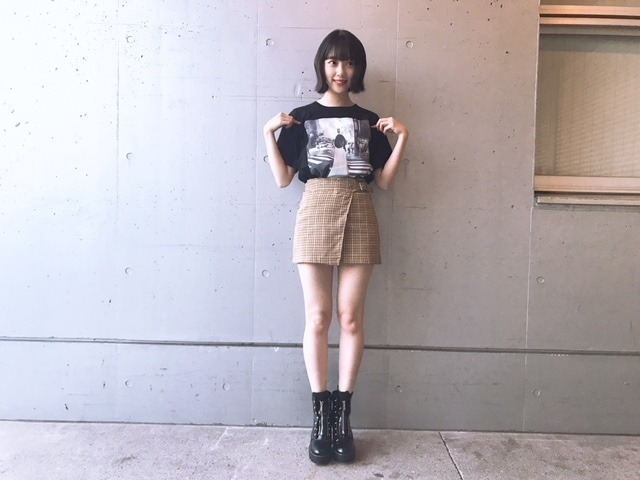
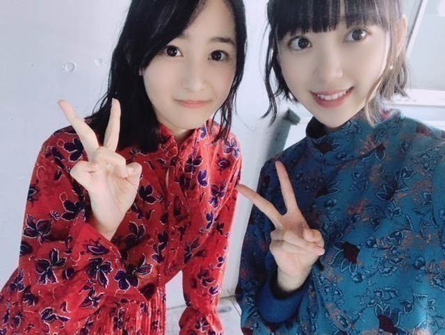

2018/1022Monchu chu

こんにちは！
10月15日生まれの人の
ラッキーカラーが
乃木坂色の 紫と聞いて
縁起がいい〜と感動している今日この頃です
☺︎
ラッキーアイテムとか
ラッキーカラーを取り入れたくなるタイプです
と、いいつつ生誕Tは黒！笑

握手会で さっそく生誕T 着ました！
皆さんとおそろい♡
ファンの皆さんもかわいくコーディネートして
着てくださっていて嬉しいです。
男性なら上におっきめの黒ブルゾン羽織って
サングラスとかしてもいいし
黒のタートルを中に着て
ズボンにtシャツを軽くインしてベルトして
マーチン(ごつめスニーカー)とかもかわいい！
女性ならショートパンツ履いて
tシャツワンピみたいにみせるのもいいし
白とかグレーのロングスカート合わせて
スニーカーも可愛いと思います☺︎
自分がデザインした服ってやっぱり
テンションあがりますね。
いつかいろんな服もプロデュース
してみたいなぁ☺︎
私服は

ブルー！私のマイブームカラー！
earring...SAINT LAURENT
onepiece...MURUA
boots...ZARA
メイクは新作コスメを早速使って
くすみピンクとラメたっぷりの
儚げ秋メイクにしてみました〜 〜
口紅は、秋冬はオレンジに挑戦したくて
SUQQUの
モイスチャーリッチリップスティック07
シャドウは
クラランスのイルミネイティングパウダーを
瞼全体に塗ってから
SUQQUのデザイニングカラーアイズ04の
左上の色を重ねて二重幅に右上の色を重ねて
左下の色を涙袋に塗りました
ナチュラルなキラキラが
最近すきです☺︎
ブルーの写真を撮ってくれたのは葉月♡
いつも私服好きって言ってくれる
かわいい妹です。


次のブログでは生誕祭のことを
書く予定です！
お待ちを。
そしてそして
次の握手会はハロウィンが近いのでなにかの
コスプレをしようか否かで迷っています。
コスプレ案がありましたら
教えてください！！
かぼちゃ以外で！！
では☺︎
2018/10/22 12:42
コメント(529)
紫やからさつまいもで いいんちゃう？ 笑笑
わりと似合いそう 笑笑
生誕Tは実用多様性があるからむっちゃ好き！
あと最近ブログ更新多くて嬉しいです！
ありがとうございます
応援してるので頑張ってください！
わりと似合いそう 笑笑
生誕Tは実用多様性があるからむっちゃ好き！
あと最近ブログ更新多くて嬉しいです！
ありがとうございます
応援してるので頑張ってください！
未央奈ちゃんこんばんは！
服装、楽しんでますね。
未央奈ちゃん、美白系だから何色でも合いますよね！
赤とか見たい気がします。
ハロウィンの仮装？
以外と魔女とか似合いそう(^o^;)
では、次のブログ楽しみにしてます！
服装、楽しんでますね。
未央奈ちゃん、美白系だから何色でも合いますよね！
赤とか見たい気がします。
ハロウィンの仮装？
以外と魔女とか似合いそう(^o^;)
では、次のブログ楽しみにしてます！
こんばんは！
10月15日生まれの人の
ラッキーカラーが、＂紫＂
縁起がいい〜ですね〜♪
未央奈さんの755からですね！
よかったですね☺︎
ラッキーカラーを取り入れたくなるの、
同感です！
私、黒色が1番好きです！
生誕Tの全身コーディネート、
凄く似合ってますね◎
脚、凄く綺麗！
ブルーも好きな色だなぁ。。
ブルーのワンピース、魅力的で
素敵です♪
葉月さんとお揃いコーデの姉妹みたいです
☺︎☺︎
ハロウィンのコスプレ、
可愛らしい魔女
可愛らしい吸血鬼
ナースさん
かな♪
ちなみに、私の両親の結婚記念日も今日！
私の妹と上の姪っ子が、それぞれ
ケーキを買ってきてくれて、
両親と妹家族たちで誕生日と結婚記念日の
お祝いのケーキを食べました♪
素敵なブログをありがとう。
未央奈♡
また☺︎
10月15日生まれの人の
ラッキーカラーが、＂紫＂
縁起がいい〜ですね〜♪
未央奈さんの755からですね！
よかったですね☺︎
ラッキーカラーを取り入れたくなるの、
同感です！
私、黒色が1番好きです！
生誕Tの全身コーディネート、
凄く似合ってますね◎
脚、凄く綺麗！
ブルーも好きな色だなぁ。。
ブルーのワンピース、魅力的で
素敵です♪
葉月さんとお揃いコーデの姉妹みたいです
☺︎☺︎
ハロウィンのコスプレ、
可愛らしい魔女
可愛らしい吸血鬼
ナースさん
かな♪
ちなみに、私の両親の結婚記念日も今日！
私の妹と上の姪っ子が、それぞれ
ケーキを買ってきてくれて、
両親と妹家族たちで誕生日と結婚記念日の
お祝いのケーキを食べました♪
素敵なブログをありがとう。
未央奈♡
また☺︎
未央奈はコメディエンヌの才能があると僕は確信しているので、（お芝居で泣かせるより笑わせるほうが難しいと思う）ハリーポッターのトレローニー先生なんかどうでしょう？ビン底メガネをしてクシャクシャ頭の未央奈を見てみたいです。未央奈ならきっと先生になりきって僕たちを楽しませてくれることでしょう。（ちなみに僕はダンブルドア先生の物まねが得意です）
超絶可愛いだけじゃなく、いつもすごくオシャレな堀ちゃん(〃▽〃) 堀ちゃんプロデュースの洋服とか、間違いなく人気出そうな気がする♪♪ ハロウィンコスプレ←わりとベタかもだけど、魔女っ子的な堀ちゃんを個人的には見てみたい(*´-`)ﾉ
夢や目標の為に自分ができる
準備や努力は惜しまず、
諦めなければ必ず必ず、叶う！と信じて
頑張ります。
未央奈の言葉
心にしみますね。
未央奈は私よりぜんぜん歳下だけど、影響されますね。(未央奈はインフルエンサー)
コメント失礼します！
生誕Tほしいです！買います！笑
私服可愛いすぎ、お似合いです（＾ω＾）
コスプレはおでんくんでお願いします！笑
ブログ更新ありがとう
生誕Tほしいです！買います！笑
私服可愛いすぎ、お似合いです（＾ω＾）
コスプレはおでんくんでお願いします！笑
ブログ更新ありがとう
うわー
マーチンのブーツ欲しくなってきましたー！
春に花柄の可愛いのが出てて。
気づいたら秋深い。
ヴィンテージっぽいワンピお似合いです、ファッションとメイクためになるー！
最近ファッションはvogueさんの雰囲気が好きで、ついでに占いも見てたのですがしいたけさんの占いでほちゃの今週は天秤座がオレンジのラッキーカラーで！流石ですね！
今週はあなたのクレージーさがすごく目立ってくれて、熱狂すること。駆け抜けて！って書いてましたよ！
いつかタイトなロングスカートでのコーデ知りたいです。
レオパードのタイトロングスカートが欲しくて探してるのです。
堀ちゃん見てると自分の体型を甘やかしていけないってなります笑
はじゅ撮るの上手！
SUQQUクリスマスコフレのアイシャドウセットが可愛かったですがジルかポールジョーも迷ってました。
クリスマスコフレは買う派ですか？
コスは、個人的にホラー映画の
堀ちゃんの
エスターちゃんが見たーい。
首の太チョーカーはできても
あのチェックの丸襟ワンピ見つけにくいですかね？
マーチンのブーツ欲しくなってきましたー！
春に花柄の可愛いのが出てて。
気づいたら秋深い。
ヴィンテージっぽいワンピお似合いです、ファッションとメイクためになるー！
最近ファッションはvogueさんの雰囲気が好きで、ついでに占いも見てたのですがしいたけさんの占いでほちゃの今週は天秤座がオレンジのラッキーカラーで！流石ですね！
今週はあなたのクレージーさがすごく目立ってくれて、熱狂すること。駆け抜けて！って書いてましたよ！
いつかタイトなロングスカートでのコーデ知りたいです。
レオパードのタイトロングスカートが欲しくて探してるのです。
堀ちゃん見てると自分の体型を甘やかしていけないってなります笑
はじゅ撮るの上手！
SUQQUクリスマスコフレのアイシャドウセットが可愛かったですがジルかポールジョーも迷ってました。
クリスマスコフレは買う派ですか？
コスは、個人的にホラー映画の
堀ちゃんの
エスターちゃんが見たーい。
首の太チョーカーはできても
あのチェックの丸襟ワンピ見つけにくいですかね？
もみじ饅頭がいいなー！
それかピーナツモナカ！笑
それかピーナツモナカ！笑
未央奈お疲れ様です−−
誕生日おめでとう！
22歳も楽しみましょう−−
目標たくさんあっていいね！
頑張っていこう！
ss
誕生日おめでとう！
22歳も楽しみましょう−−
目標たくさんあっていいね！
頑張っていこう！
ss
脚がお綺麗な堀殿ぐうかわでうれぴーぽー(o￣◎￣)oバブゥ
乃木坂工事中♡金のおの銀のおのの堀殿画伯の絵♡よきよきピーナッツでばいころまる( ;-(ｴ)-)ゞｸﾏｯﾀﾅｧ…
乃木坂工事中♡金のおの銀のおのの堀殿画伯の絵♡よきよきピーナッツでばいころまる( ;-(ｴ)-)ゞｸﾏｯﾀﾅｧ…
27日行くからよろしくね❗
コスチュームは、やっぱり魔女の宅急便のキキでしょ？もう過去にやったかな？
楽しみにしてるね❗
コスチュームは、やっぱり魔女の宅急便のキキでしょ？もう過去にやったかな？
楽しみにしてるね❗
みおなちゃん更新ありがとう。
そして改めて誕生日おめでとうございます。
しかし黒髪ショートのみおちゃん最強。
そのうえにプロポーションも良すぎ。
ホットギミッククランクアップしたんだね。
お疲れ様です。
来年公開されたら必ず鑑賞させてもらいます。
何なら生誕Tシャツ着ていこうかな。
鬼に笑われるかもしれないけれど来年の楽しみがあって嬉しい。
頑張ってはハラスメントになるみたいだから
今まで通りマイペースで活動していただければと思います。
そして改めて誕生日おめでとうございます。
しかし黒髪ショートのみおちゃん最強。
そのうえにプロポーションも良すぎ。
ホットギミッククランクアップしたんだね。
お疲れ様です。
来年公開されたら必ず鑑賞させてもらいます。
何なら生誕Tシャツ着ていこうかな。
鬼に笑われるかもしれないけれど来年の楽しみがあって嬉しい。
頑張ってはハラスメントになるみたいだから
今まで通りマイペースで活動していただければと思います。
みおなかわいすぎです〜〜
ほんとに好きです笑
ほんとに好きです笑
未央奈ちゃん、こんばんは(^o^)/
未央奈の服と葉月ちゃんの服似てるね( ＾∀＾)
未央奈の服と葉月ちゃんの服似てるね( ＾∀＾)
記念Tシャツにはデザイナーとしてのキャリアアップの意味合いがあるのですね（笑）
私服エスニックで葉月ちゃんと双子コーデみたいでマッチしてて良いね(^^)
コスプレは、サッカーウェアとかイタズラの象徴でもあり絢音ちゃんが演じている『キツネ』とかどうだろう？
私服エスニックで葉月ちゃんと双子コーデみたいでマッチしてて良いね(^^)
コスプレは、サッカーウェアとかイタズラの象徴でもあり絢音ちゃんが演じている『キツネ』とかどうだろう？
かぼちゃ以外って？
かぼちゃで何かあったのかな？
それにしても前からも後ろからもかわいいって
なんだろう？
脚もやっぱり綺麗だし！
かぼちゃで何かあったのかな？
それにしても前からも後ろからもかわいいって
なんだろう？
脚もやっぱり綺麗だし！
手持ちの服で生誕Ｔに合わせるなら黒ジャケットと黒ジーンズかなあ
どう？
生誕祭レポート、行けなかった衆にも伝えておくれ^^
よろしく
どう？
生誕祭レポート、行けなかった衆にも伝えておくれ^^
よろしく
みおなちゃん可愛いね後ろ姿のからいいね
堀さん、こんばんは。ブログ更新してくれて嬉しいです。
ラッキーカラーが紫だなんてそれがもうラッキーですね。
生誕Tシャツの写真は着こなしも見事だしスタイルの良さが際立ってます。ブルーの写真は大人っぽいし壁までコーディネートしてて流石です。ブルーがブームなのは青空の色だからでしょうか。
堀さんと葉月さんのプロフィール写真が二人ともツインだなとは思ってたんですけど、先日の工事中では暗躍して日村さんに葉月さんをけしかけてたし仲睦まじいんですね。ツーショットは赤と青で何となく服も似てます。赤と青ということは、それぞれの椅子的に考えれば、その日の葉月さんは堀さんにラッキーを届ける存在だったのかもしれませんね。
コスプレ案難しいですね。成田初の格好はまだ早いでしょうか。先日の堀さんの自己紹介ブログの映画から探してみたところ、レザーフェイスは顔出なくてダメで、この前上映してたザ・プレデターではハロウィンに子供がプレデターのマスクかぶってく場面ありましたけどやっぱり顔出ないからダメで、とりあえずアメリが髪の長さも近いのでいいんじゃないでしょうか。とにかく怖がらせ重視ならITのピエロあたりもいいと思います。
ラッキーカラーが紫だなんてそれがもうラッキーですね。
生誕Tシャツの写真は着こなしも見事だしスタイルの良さが際立ってます。ブルーの写真は大人っぽいし壁までコーディネートしてて流石です。ブルーがブームなのは青空の色だからでしょうか。
堀さんと葉月さんのプロフィール写真が二人ともツインだなとは思ってたんですけど、先日の工事中では暗躍して日村さんに葉月さんをけしかけてたし仲睦まじいんですね。ツーショットは赤と青で何となく服も似てます。赤と青ということは、それぞれの椅子的に考えれば、その日の葉月さんは堀さんにラッキーを届ける存在だったのかもしれませんね。
コスプレ案難しいですね。成田初の格好はまだ早いでしょうか。先日の堀さんの自己紹介ブログの映画から探してみたところ、レザーフェイスは顔出なくてダメで、この前上映してたザ・プレデターではハロウィンに子供がプレデターのマスクかぶってく場面ありましたけどやっぱり顔出ないからダメで、とりあえずアメリが髪の長さも近いのでいいんじゃないでしょうか。とにかく怖がらせ重視ならITのピエロあたりもいいと思います。
ヤンキー未央奈がみたいです笑笑
未央奈 、
21日の幕張Messe 2部での握手会では、
ショートボブの後ろまとめヘアーに、
花柄モスグリーンハイネックワンピースと緑帯の
キレイでかわいい未央奈に
会えてうれしかったよ。
未央奈に、
・生誕祭では落ち着いた いい挨拶だったね。
・（ショートボブの）髪型かわいいよ。
・ホットギミック公開楽しみ。
って伝えられてよかったよ。
13日BigSightでの握手会1、2、3部では、
外ハネ ボブや、後ろ流しヘアー、後ろまとめヘアーに、
白トップスや、白地花柄ワンピースに紫カーディガンと、
黒ベレー帽の
キレイでかわいい未央奈に
会えてうれしかったよ。
未央奈に
・これまでいっぱい演技の研究してきた
成果が遂に出せるね。
・ずっと目標にしてた青春映画の主演って凄いね。
遂に目標をかなえたね。
・ずーっと演技の研究を頑張ってきたからね。
努力のおかげだね。
・お誕生日おめでとうございます。
はじめ16才だった未央奈が 頑張って、
どんどん目標をかなえて、
(成長して)いってのが素晴らしいよ。
・arの水墨画は素晴らしかったね。
リップ特集ではキレイだったよ。
って伝えられてよかったよ。
次の握手会は 10月27日だね。
2部で また、
キレイでかわいい未央奈に会えるのを
楽しみにしてるね〜。
21日の幕張Messe 2部での握手会では、
ショートボブの後ろまとめヘアーに、
花柄モスグリーンハイネックワンピースと緑帯の
キレイでかわいい未央奈に
会えてうれしかったよ。
未央奈に、
・生誕祭では落ち着いた いい挨拶だったね。
・（ショートボブの）髪型かわいいよ。
・ホットギミック公開楽しみ。
って伝えられてよかったよ。
13日BigSightでの握手会1、2、3部では、
外ハネ ボブや、後ろ流しヘアー、後ろまとめヘアーに、
白トップスや、白地花柄ワンピースに紫カーディガンと、
黒ベレー帽の
キレイでかわいい未央奈に
会えてうれしかったよ。
未央奈に
・これまでいっぱい演技の研究してきた
成果が遂に出せるね。
・ずっと目標にしてた青春映画の主演って凄いね。
遂に目標をかなえたね。
・ずーっと演技の研究を頑張ってきたからね。
努力のおかげだね。
・お誕生日おめでとうございます。
はじめ16才だった未央奈が 頑張って、
どんどん目標をかなえて、
(成長して)いってのが素晴らしいよ。
・arの水墨画は素晴らしかったね。
リップ特集ではキレイだったよ。
って伝えられてよかったよ。
次の握手会は 10月27日だね。
2部で また、
キレイでかわいい未央奈に会えるのを
楽しみにしてるね〜。
未央奈～☆☆
やっぱり、未央奈は綺麗だなー
写真を見てなんか改めてそう思った。
それから、未央奈のファッションセンスも好きだなー
未央奈はファッションモデルもやってて、
未央奈自身もファッションに凄く興味があるから、
ファッションセンスの磨かれ方が凄いんだろうなー
いつか、未央奈がコーディネートした服を着てみたいな～
やっぱり、未央奈は綺麗だなー
写真を見てなんか改めてそう思った。
それから、未央奈のファッションセンスも好きだなー
未央奈はファッションモデルもやってて、
未央奈自身もファッションに凄く興味があるから、
ファッションセンスの磨かれ方が凄いんだろうなー
いつか、未央奈がコーディネートした服を着てみたいな～
未央奈～ こんにちは
幕張での個握、おつかれさまでした。そして、生誕祭、改めてお誕生日おめでとうございます。以前は９月・１０月が少なかったのに３期生のおかげでにぎやかになったから、うれしいですよね。
生誕Tシャツを着ての握手会、うらやましいなぁ～。１０月８日の名古屋全握は、来れなかったし、今回は名古屋個握がないので、残念です。
それにしても脚きれい。「誰の脚？」って話題になっていたようですが、「すぐ」とは言えませんが、わかりましたよ。
はづきの妹観、伝わってきますね。後輩から慕われるのはもちろんですが、信頼される・尊敬される先輩として、これからもご活躍ください。
幕張での個握、おつかれさまでした。そして、生誕祭、改めてお誕生日おめでとうございます。以前は９月・１０月が少なかったのに３期生のおかげでにぎやかになったから、うれしいですよね。
生誕Tシャツを着ての握手会、うらやましいなぁ～。１０月８日の名古屋全握は、来れなかったし、今回は名古屋個握がないので、残念です。
それにしても脚きれい。「誰の脚？」って話題になっていたようですが、「すぐ」とは言えませんが、わかりましたよ。
はづきの妹観、伝わってきますね。後輩から慕われるのはもちろんですが、信頼される・尊敬される先輩として、これからもご活躍ください。
みおな☆★☆タンポポだけども～♪♪♪
（*＾3＾）/～☆
みおなはマジでスタイル抜群やね♪
足長っ！！てなる♪♪
みおなって飽きない♪♪
可愛いすぎるのに
面白いから♪♪♪
みおなの主演映画はよ観たいわ♪♪
大好きやで！！！
みおなはタンポポの人生のキキだよ！！タンポポはジジだよ！！
みおな猫アレルギーやけどな♪♪
(o≧▽゜)o
未央奈～おはよう！
ぽてとです！
生誕T、私服、どちらも可愛い♪
次回のブログもたのしみおな(^^)
コスプレは「キキ」かなやっぱり♪
ぽてとです！
生誕T、私服、どちらも可愛い♪
次回のブログもたのしみおな(^^)
コスプレは「キキ」かなやっぱり♪
堀さん、おはようございます。
占いでラッキーカラーが乃木坂46色の紫とはまためでたいお話。美術館やホテルなどで使うロッカーのナンバー46が空いていたときなどもラッキー！ と思ってしまいます……って、これは占いとは関係ないですね（笑）。
生誕Tシャツをおしゃれに着こなしてもらえれば、デザインしたメンバーの皆さんにとっても嬉しいことでしょう。いろいろコーディネートして楽しみたいものです。
私服の写真もありがとうございます。堀さんマイブーム私服の青に、名カメラマンにしてかわいい妹の向井さんの服の赤。足し合わせるとラッキーカラーの紫に。うむ、やはり縁起がいいお話です。
ではまたコメント寄せにまいりましょう。今日も一日がんばります。
さらばだ、また会おう！（気球に乗って去りぬ〜）
占いでラッキーカラーが乃木坂46色の紫とはまためでたいお話。美術館やホテルなどで使うロッカーのナンバー46が空いていたときなどもラッキー！ と思ってしまいます……って、これは占いとは関係ないですね（笑）。
生誕Tシャツをおしゃれに着こなしてもらえれば、デザインしたメンバーの皆さんにとっても嬉しいことでしょう。いろいろコーディネートして楽しみたいものです。
私服の写真もありがとうございます。堀さんマイブーム私服の青に、名カメラマンにしてかわいい妹の向井さんの服の赤。足し合わせるとラッキーカラーの紫に。うむ、やはり縁起がいいお話です。
ではまたコメント寄せにまいりましょう。今日も一日がんばります。
さらばだ、また会おう！（気球に乗って去りぬ〜）
誕生日おめでとうございます～
後ろ姿もまあかわいい！
後ろ姿もまあかわいい！
未央奈ちゃん
脚がキレイね！
コスプレは、、、
考えたけど、、、
何でも似合うんだろうな
結局！？
脚がキレイね！
コスプレは、、、
考えたけど、、、
何でも似合うんだろうな
結局！？
堀ちゃん
おはようございます
生誕Ｔシャツのコーディネートとても似合ってます（流石は考案者ですね）
青のワンピースも非常に上品なイメージがあってカッコいいです
コスプレですが、かぼちゃ以外ならやっぱり魔女が定番な気がします
それか昔堀ちゃんがドッキリでやったガチのゾンビメイクはどうですかね（メイクに時間かかりそうだから顔半分だけとか）
参考にならんかもしれないですが魔女かゾンビを推奨しますので頑張って下さい（次も行けんですが）
仕事行ってきます
今日も1日頑張っていきましょう！
ありがとうございました
おはようございます
生誕Ｔシャツのコーディネートとても似合ってます（流石は考案者ですね）
青のワンピースも非常に上品なイメージがあってカッコいいです
コスプレですが、かぼちゃ以外ならやっぱり魔女が定番な気がします
それか昔堀ちゃんがドッキリでやったガチのゾンビメイクはどうですかね（メイクに時間かかりそうだから顔半分だけとか）
参考にならんかもしれないですが魔女かゾンビを推奨しますので頑張って下さい（次も行けんですが）
仕事行ってきます
今日も1日頑張っていきましょう！
ありがとうございました
おはよー！
生誕Tいいねー！
コスプレはネコ未央奈がみたいおー！
生誕Tいいねー！
コスプレはネコ未央奈がみたいおー！
おはようございます。
42歳二児の父、走ることと歌うことが大好きなサラリーマン、埼玉のボインキラーです。
未央奈の個握当たったことない。涙
でも人気があるのは良いことです。笑
メッチャおしゃれ、フィギュアみたいにスタイルが良い。
何となくこのブログ、充実感が伝わってくる。
いつもファンと向き合っている未央奈が大好きです。
改めて22歳の誕生日おめでとう

未央奈の22歳が幸せでありますように。
42歳二児の父、走ることと歌うことが大好きなサラリーマン、埼玉のボインキラーです。
未央奈の個握当たったことない。涙
でも人気があるのは良いことです。笑
メッチャおしゃれ、フィギュアみたいにスタイルが良い。
何となくこのブログ、充実感が伝わってくる。
いつもファンと向き合っている未央奈が大好きです。
改めて22歳の誕生日おめでとう
未央奈の22歳が幸せでありますように。
おはよー！
他のメンバーがやらなそうなコスプレがいいんでしょ？
チャッキー。ジェイソンあたりは？
コマンドーとか。
他のメンバーがやらなそうなコスプレがいいんでしょ？
チャッキー。ジェイソンあたりは？
コマンドーとか。
ありがとう♪
大好き ♥❤
大好き ♥❤
未央ちゃん
ブログ更新ありがとう
生誕Ｔシャツ
カッコイイ感じでステキだね
私服もブルーが
似合ってる
オシャレなコ大好き(笑)
今日も体調気をつけてね
ブログ更新ありがとう
生誕Ｔシャツ
カッコイイ感じでステキだね
私服もブルーが
似合ってる
オシャレなコ大好き(笑)
今日も体調気をつけてね
未央奈ー❗️
ブログありがとう❗️
改めて
お誕生日おめでとう✨✨
幕張の個握で直接言えてよかった
未央奈と誕生日が5日違いで
逆に『おめでとう❗️』って言ってもらえて
嬉しかった
蘭世ちゃんじゃないけど
誕生日の日がいつも休みとか
テスト初日とかで...笑
あんまり嬉しく思ってなかったんだけど
今年はホントに嬉しかった❗️
未央奈ありがとう✨✨
ゆうたんより
ブログありがとう❗️
改めて
お誕生日おめでとう✨✨
幕張の個握で直接言えてよかった
未央奈と誕生日が5日違いで
逆に『おめでとう❗️』って言ってもらえて
嬉しかった
蘭世ちゃんじゃないけど
誕生日の日がいつも休みとか
テスト初日とかで...笑
あんまり嬉しく思ってなかったんだけど
今年はホントに嬉しかった❗️
未央奈ありがとう✨✨
ゆうたんより
未央奈ちゃん更新ありがとー！
自分のラッキーアイテムは「ブルーと数字の7」と勝手に決めてます。笑
未央奈コーデ挑戦してみようかなー。
好きなコーデもっと教えてほしい！
ハロウィンの衣装は、可愛い吸血鬼がいいな！
ではでは
自分のラッキーアイテムは「ブルーと数字の7」と勝手に決めてます。笑
未央奈コーデ挑戦してみようかなー。
好きなコーデもっと教えてほしい！
ハロウィンの衣装は、可愛い吸血鬼がいいな！
ではでは
誕生日おめでとうー！
ブログありがとう
改めて誕生日おめでとう
そして先日の幕張個握は2部〜5部でお邪魔しました。
全部笑顔で接してくれてありがとう
最後名前呼んでくれて嬉しかったよーー！
また今週も行きます。名前覚えてもらうように頑張ります。
これからもよろしくね。
映画にモデルに忙しい未央奈ちゃんだから、ちゃんと休んでね。また次の個握で元気な姿見に行きたいと思います。
でわ。
改めて誕生日おめでとう
そして先日の幕張個握は2部〜5部でお邪魔しました。
全部笑顔で接してくれてありがとう
最後名前呼んでくれて嬉しかったよーー！
また今週も行きます。名前覚えてもらうように頑張ります。
これからもよろしくね。
映画にモデルに忙しい未央奈ちゃんだから、ちゃんと休んでね。また次の個握で元気な姿見に行きたいと思います。
でわ。
幕張メッセでの握手会、お疲れさまでした。
未央奈の誕生祭があったり、ブログで誕生Tシャツを着るってアナウンスしていたこともあり、未央奈の誕生Tシャツを着ているファンがたくさんいたね。
ちなみに俺も着ていったよ。
握手するときに「お揃いだね」って未央奈が言ってくれたから、少し気恥ずかしさもあったけど、スッゴク嬉しかったよ

誕生Tシャツは未央奈のファンになってから毎年買っていて、毎回どんなデザインになるか楽しみにしてるんだよ。
今年のTシャツは背中のchu chuてところが可愛いよね。
ブログに写真を載せてるけど、
個人的には「誕生Tシャツを着た未央奈」は可愛い、「ブルーの服を着た未央奈」は綺麗って印象なんだよね。
俺は、可愛い未央奈も綺麗な未央奈も大好きで、握手会で両方の未央奈が見れるのは嬉しいよ。
次の握手会はコスプレするんだね
やってもらいたいコスプレは、ホットギミックの初ちゃん風の制服を着てもらいたいな
というのも、ホットギミックの公開が待ち遠しいから、初ちゃんになった未央奈がはやく見たいと思ってるので。
ゴロ～
未央奈の誕生祭があったり、ブログで誕生Tシャツを着るってアナウンスしていたこともあり、未央奈の誕生Tシャツを着ているファンがたくさんいたね。
ちなみに俺も着ていったよ。
握手するときに「お揃いだね」って未央奈が言ってくれたから、少し気恥ずかしさもあったけど、スッゴク嬉しかったよ
誕生Tシャツは未央奈のファンになってから毎年買っていて、毎回どんなデザインになるか楽しみにしてるんだよ。
今年のTシャツは背中のchu chuてところが可愛いよね。
ブログに写真を載せてるけど、
個人的には「誕生Tシャツを着た未央奈」は可愛い、「ブルーの服を着た未央奈」は綺麗って印象なんだよね。
俺は、可愛い未央奈も綺麗な未央奈も大好きで、握手会で両方の未央奈が見れるのは嬉しいよ。
次の握手会はコスプレするんだね
やってもらいたいコスプレは、ホットギミックの初ちゃん風の制服を着てもらいたいな
というのも、ホットギミックの公開が待ち遠しいから、初ちゃんになった未央奈がはやく見たいと思ってるので。
ゴロ～
未央奈ちゃんありがとうございます！楽しみにしてます！頑張ります‼頑張って下さいね。今日もお仕事頑張って下さい！気を付けて下さい。
未央奈の生誕Tシャツ買ったよ〜
生誕祭よかったね！！
ハロウィン誕生日だからどんな仮装してくれるのか楽しみやな〜
ハロウィン誕生日だからどんな仮装してくれるのか楽しみやな〜
未央奈 おはよう！
生誕T 着たよ！
大人っぽくね。
未央奈のコーディネートに似てるかな。
生誕祭の感想は次回に合わせて書くね！
そうそう、葉月ちゃんをコーディネートして欲しいな。
葉月ちゃん もったいないもん。
コーディネートしてる未央奈も見たいしね。
未央奈は未央奈のままで、
最高の笑顔で！
生誕T 着たよ！
大人っぽくね。
未央奈のコーディネートに似てるかな。
生誕祭の感想は次回に合わせて書くね！
そうそう、葉月ちゃんをコーディネートして欲しいな。
葉月ちゃん もったいないもん。
コーディネートしてる未央奈も見たいしね。
未央奈は未央奈のままで、
最高の笑顔で！
スタイルいいし、お洒落！！
かわいいなー(о´∀`о)
かわいいなー(о´∀`о)
かりんちゃんがやってたみたいにディズニーのお姫様とかどう？？絶対似合う！！
あお、好き‼可愛い✨
ハロウィン未央奈見たいな！
ではまた！
ハロウィン未央奈見たいな！
ではまた！
おぱよう。セブンやよ(ฅ'ω'ฅ)♪
生誕祭良きでしたね
22歳も良き年になるよう応援しております。
最近はめっきり未央奈に会えておりませんが、いずれまた会えたらいいなぁっと…
葉月と服のテイスト似てますね！
偶然ですか？
2人ともよく似合ってますね(^-^)
コスプレはシンプルにネコが良きかと
未央奈ってネコっぽいし
もしくは猫娘とかどうでしょう？
では、今日も1日楽しもうd(@^∇ﾟ)/ﾌｧｲﾄｯ♪
o(ﾟ▽＾)ﾉｼまたねぃ♪
生誕祭良きでしたね
22歳も良き年になるよう応援しております。
最近はめっきり未央奈に会えておりませんが、いずれまた会えたらいいなぁっと…
葉月と服のテイスト似てますね！
偶然ですか？
2人ともよく似合ってますね(^-^)
コスプレはシンプルにネコが良きかと
未央奈ってネコっぽいし
もしくは猫娘とかどうでしょう？
では、今日も1日楽しもうd(@^∇ﾟ)/ﾌｧｲﾄｯ♪
o(ﾟ▽＾)ﾉｼまたねぃ♪
ブログ更新ありがとう(≧▽≦)私服がもはや衣装レベル！！！！
凄く素敵(≧▽≦)
凄く素敵(≧▽≦)


魔女とかドラキュラとかがいいと思う！